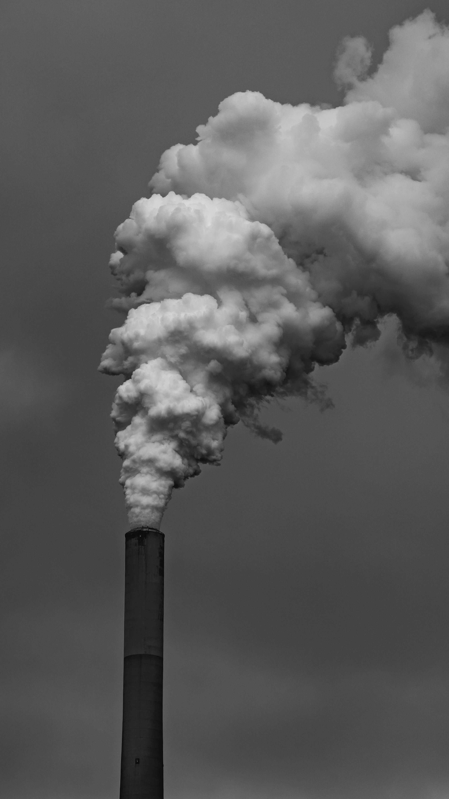
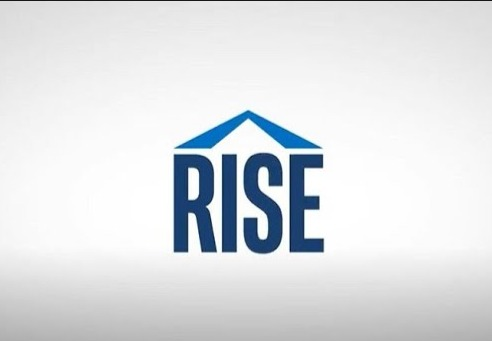
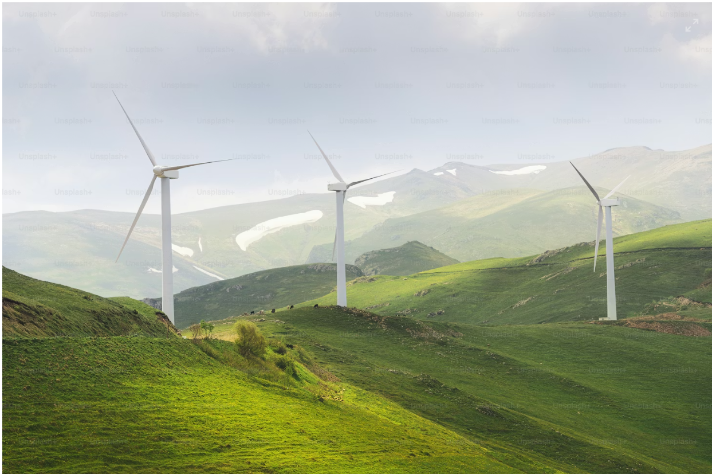
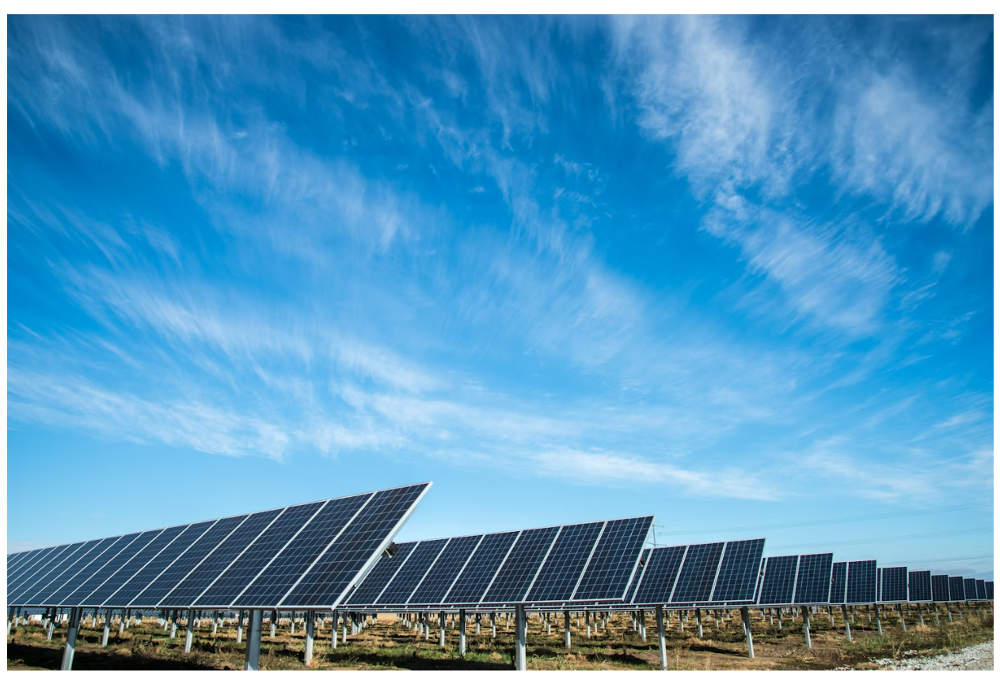
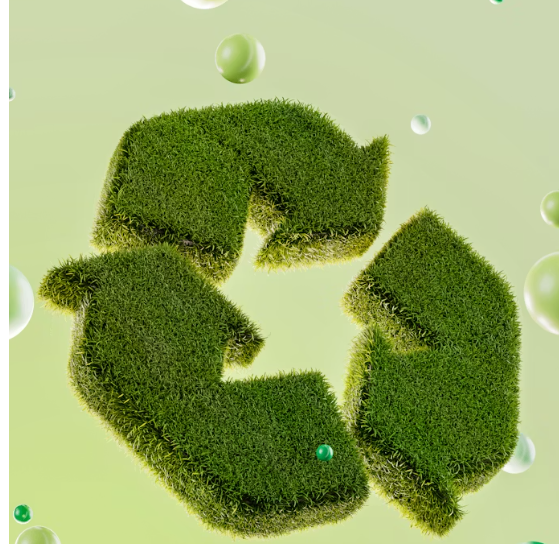

Sustainability
Through the Ages
Explore Intel's journey through time, discovering how our commitment to innovation has shaped a more sustainable future for technology and our planet.
Explore Intel's journey through time, discovering how our commitment to innovation has shaped a more sustainable future for technology and our planet.
Robert Noyce and Gordon Moore rename the newly formed company NM Electronics to Intel Corporation, laying the foundation for decades of technological innovation.
Learn More
Intel debuts the 4004, the world's first commercial microprocessor, igniting the microprocessor revolution and propelling the future of computing devices.
Learn More
Launch of the 8086 processor, establishing the x86 architecture that drives countless PCs and servers in the modern era.
Learn More
Intel introduces the 386 processor with 32-bit architecture, ushering in a new era of performance and multitasking for personal computers.
Learn MoreThis year marks Intel's highest annual greenhouse gas emissions for operations. Over subsequent years, Intel invests heavily in chemical abatement and renewable energy.
Learn More
Intel launches its RISE strategy focused on Responsible, Inclusive, Sustainable, and Enabling innovation across the industry.
Learn More
Intel commits to achieving net-zero greenhouse gas emissions across global operations by 2040.
Learn More
Intel achieves 99% renewable electricity usage worldwide, significantly reducing carbon emissions.
Learn More
Intel hosts its first Sustainability Summit, bringing together global leaders to advance sustainable semiconductor manufacturing.
Learn More